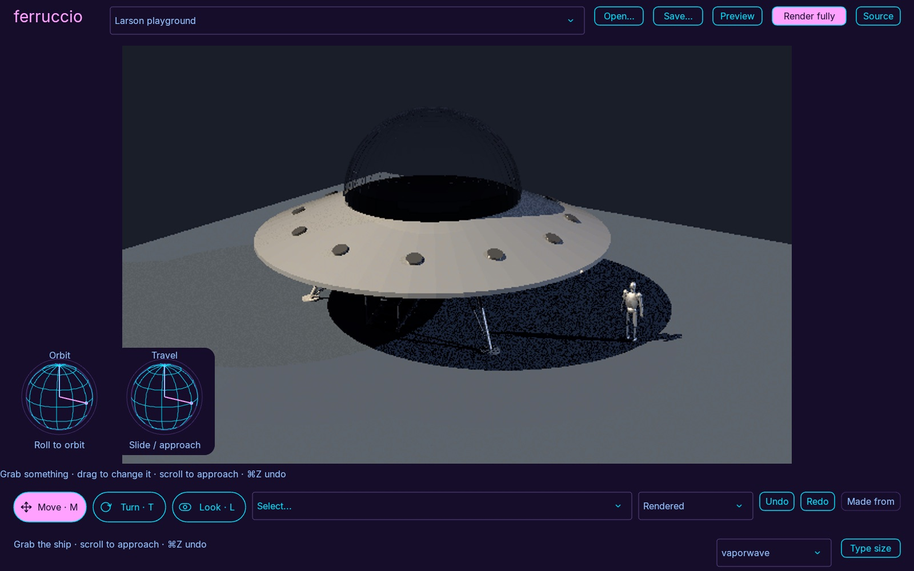
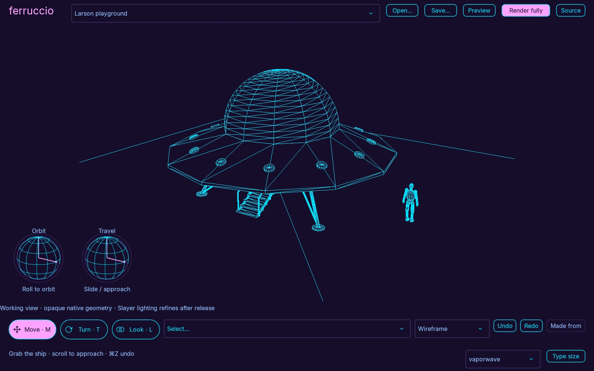
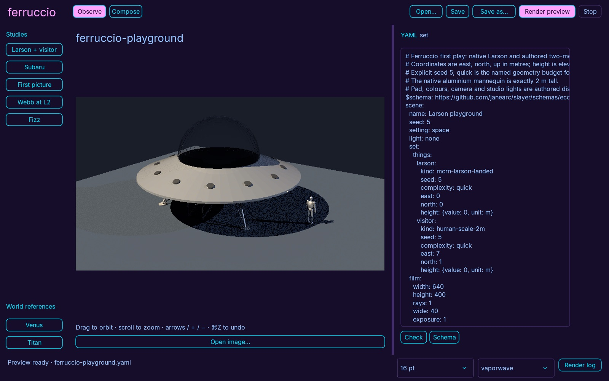

ferruccio
Ferruccio is Slayer’s scene editor. You use it to place objects, move the camera and find the picture you want to render.
Start with the Larson, a flying saucer with a person standing beside it for scale. Drag the ship, turn it, or move closer to see how it’s built. The idea comes from Bryce 3D: give someone a world they can play with, then let them get as technical as they like.

get the shot
The two trackballs control the camera. Orbit turns it around the subject. Travel moves it sideways, forward and back. Move and Turn let you change the objects themselves. Undo and redo let you try a different arrangement without starting over.
Use the wireframe to work on a complicated scene, or switch to a solid view to judge its shape. Preview asks Slayer for a quick render. Render fully produces the finished image with Slayer’s ray tracer. The working view helps you compose; the render shows you the light.

go deeper when you want to
In Play, the scene fills the window. Observe brings its YAML into view so you can read and edit the scene directly. Compose keeps the camera controls close while you work on framing.
The scene is saved as a plain-text YAML file. You can keep working on it in Ferruccio, open it in another editor, or hand it to a coding agent. Examples open as copies, and a draft with an error stays available while you fix it.

built for Slayer
Ferruccio is a native Go application. Its working view uses wgpu and Metal; Slayer handles the final render. Complex scenes can take longer to draw, which is why the editor offers simpler display modes.
The interface uses Chroma’s themes, with adjustable text from 16 to 24 points. You can choose the colors and type size that are comfortable for a long session.